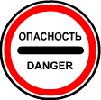
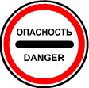

3.1. Водители транспортных средств с включенным проблесковым маячком синего цвета, выполняя неотложное служебное задание, могут отступать от требований разделов 6 (кроме сигналов регулировщика) и 8 — 18 настоящих Правил, приложений 1 и 2 к настоящим Правилам при условии обеспечения безопасности движения.
Для получения преимущества перед другими участниками движения водители таких транспортных средств должны включить проблесковый маячок синего цвета и специальный звуковой сигнал. Воспользоваться приоритетом они могут только убедившись, что им уступают дорогу.
Этим же правом пользуются водители транспортных средств, сопровождаемых транспортными средствами, имеющими нанесенные на наружные поверхности специальные цветографические схемы, с включенными проблесковыми маячками синего и красного цветов и специальным звуковым сигналом, в случаях, установленных настоящим пунктом. На сопровождаемых транспортных средствах должен быть включен ближний свет фар.
На транспортных средствах Государственной инспекции безопасности дорожного движения Министерства внутренних дел Российской Федерации, Федеральной службы охраны Российской Федерации, Федеральной службы безопасности Российской Федерации и Военной автомобильной инспекции дополнительно к проблесковому маячку синего цвета может быть включен проблесковый маячок красного цвета.
3.2. При приближении транспортного средства с включенными проблесковым маячком синего цвета и специальным звуковым сигналом водители обязаны уступить дорогу для обеспечения беспрепятственного проезда указанного транспортного средства.
При приближении транспортного средства, имеющего нанесенные на наружные поверхности специальные цветографические схемы, с включенными проблесковыми маячками синего и красного цветов и специальным звуковым сигналом водители обязаны уступить дорогу для обеспечения беспрепятственного проезда указанного транспортного средства, а также сопровождаемого им транспортного средства (сопровождаемых транспортных средств).
Запрещается выполнять обгон транспортного средства, имеющего нанесенные на наружные поверхности специальные цветографические схемы с включенными проблесковым маячком синего цвета и специальным звуковым сигналом.
Запрещается выполнять обгон транспортного средства, имеющего нанесенные на наружные поверхности специальные цветографические схемы, с включенными проблесковыми маячками синего и красного цветов и специальным звуковым сигналом, а также сопровождаемого им транспортного средства (сопровождаемых транспортных средств).
3.3. Приближаясь к стоящему транспортному средству с включенным проблесковым маячком синего цвета, водитель должен снизить скорость, чтобы иметь возможность немедленно остановиться в случае необходимости.
3.4. Проблесковый маячок желтого или оранжевого цвета должен быть включен на транспортных средствах в следующих случаях:
- выполнение работ по строительству, ремонту или содержанию дорог, погрузке поврежденных, неисправных и перемещаемых транспортных средств;
- движение крупногабаритных транспортных средств, а также перевозка грузов повышенной опасности; (в ред. Постановлений Правительства РФ от 26.03.2020 № 341, от 06.10.2022 № 1769)
- сопровождение тяжеловесных и (или) крупногабаритных транспортных средств, а также транспортных средств, осуществляющих перевозки опасных грузов; (абзац изменен Постановлением Правительства РФ от 26.03.2020 № 341)
- сопровождение организованных групп велосипедистов при проведении тренировочных мероприятий на автомобильных дорогах общего пользования;
- организованная перевозка группы детей. (абзац введен Постановлением Правительства РФ от 23.12.2017 № 1621)
Включенный проблесковый маячок желтого или оранжевого цвета не дает преимущества в движении и служит для предупреждения других участников движения об опасности.
3.5.
Водители транспортных средств с включенным проблесковым маячком желтого или оранжевого цвета при выполнении работ по строительству, реконструкции, капитальному ремонту, ремонту или содержанию дорог, погрузке поврежденных, неисправных и перемещаемых транспортных средств могут отступать от требований дорожных знаков (кроме
знаков 2.2  ,
2.4 — 2.6
,
2.4 — 2.6 

 ,
3.11 — 3.14
,
3.11 — 3.14 


 ,
3.17.2 
,
3.20
,
3.17.2 
,
3.20  ) и дорожной разметки, а также пунктов 9.4
— 9.8
и 16.1
настоящих Правил при условии обеспечения безопасности дорожного движения.
) и дорожной разметки, а также пунктов 9.4
— 9.8
и 16.1
настоящих Правил при условии обеспечения безопасности дорожного движения.
Водители крупногабаритных транспортных средств, а также транспортных средств, осуществляющих сопровождение крупногабаритных и (или) тяжеловесных транспортных средств, с включенным проблесковым маячком желтого или оранжевого цвета могут отступать от требований дорожной разметки при условии обеспечения безопасности дорожного движения. (абзац изменен Постановлением Правительства РФ от 26.03.2020 № 341)
3.6. Водители транспортных средств организаций федеральной почтовой связи и транспортных средств, перевозящих денежную выручку и (или) ценные грузы, могут включать проблесковый маячок бело-лунного цвета и специальный звуковой сигнал только при нападениях на указанные транспортные средства. Проблесковый маячок бело-лунного цвета не дает преимущества в движении и служит для привлечения внимания сотрудников полиции и иных лиц.